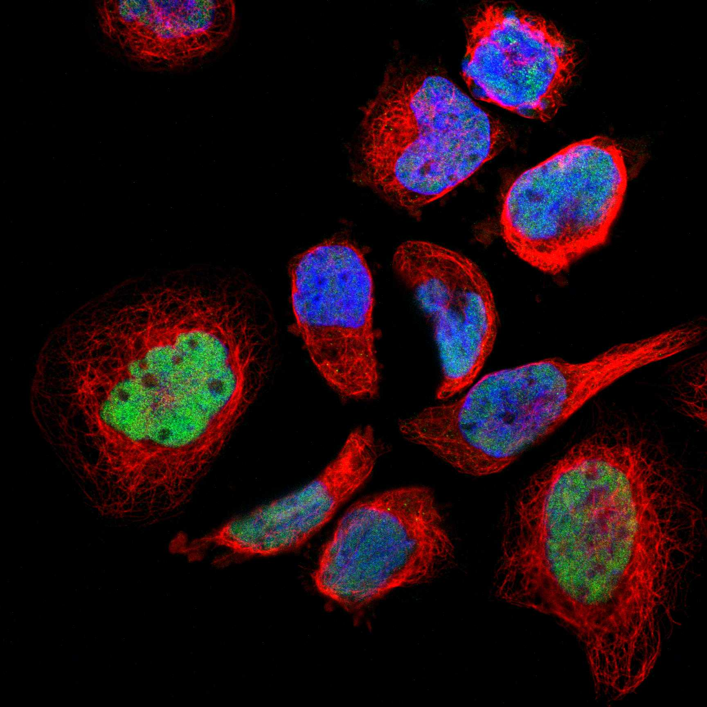
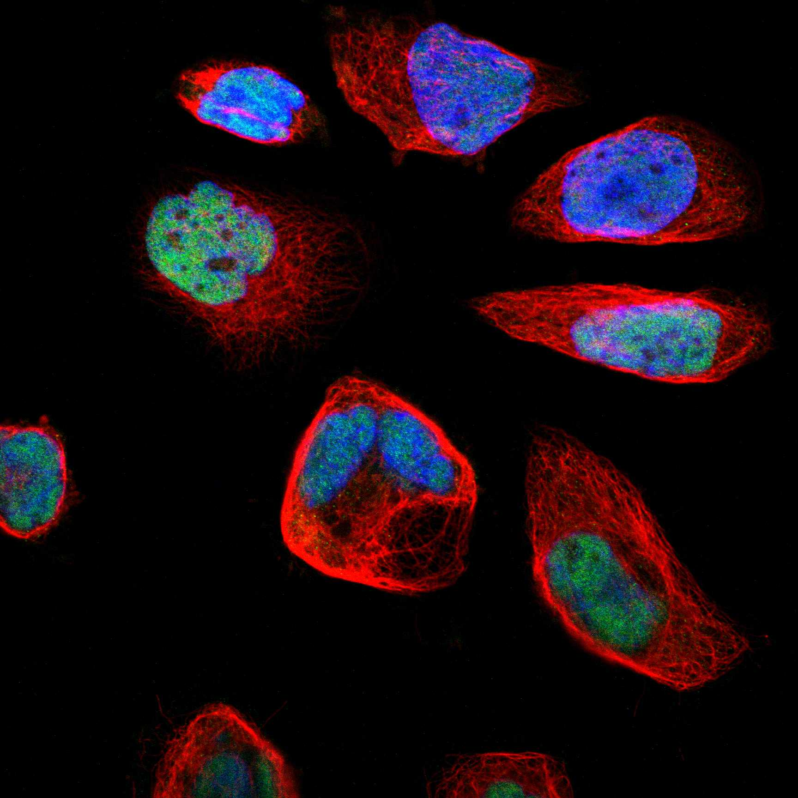

type: protein-evaluation gene: "CEBPG" date: 2026-06-02 tags: [protein-scout, nucleoplasm, evaluation] status: scored pm: 55 ---
CEBPG 核蛋白评估报告
1. 基本信息
| 项目 | 内容 |
|---|---|
| 基因名 / 别名 | CEBPG (no known aliases) |
| 蛋白全称 | CCAAT/enhancer-binding protein gamma |
| 蛋白大小 | 150 aa / 16.4 kDa |
| UniProt ID | P53567 |
| AlphaFold | AF-P53567-F1 (v6) |
2. 评分总览
| 维度 | 得分 | 满分 | 加权后 | 关键证据摘要 |
|---|---|---|---|---|
| 核定位特异性 | 8/10 | ×4 | 32 | HPA Supported Nucleoplasm; GO nucleoplasm IDA:HPA + chromatin ISA + nucleus ISS |
| 蛋白大小 | 10/10 | ×1 | 10 | 150 aa，理想范围 |
| 研究新颖性 | 6/10 | ×5 | 30 | PubMed strict=55，≤60 档，中等新颖性 |
| 三维结构 | 5/10 | ×3 | 15 | 无 PDB 结构; AF mean pLDDT 74.5, bZIP 结构域预测良好 |
| 调控结构域 | 10/10 | ×2 | 20 | bZIP 转录因子 (IPR004827, PF07716)，经典 DNA 结合域 |
| PPI 网络 | 8/10 | ×3 | 24 | STRING 15 + IntAct + UniProt 40 互作; ATF/CEBP/FOS/JUN 家族网络 |
| 互证加分 | -- | -- | +0.5 | ATF4-CEBPG 异源二聚体多库互证 (+0.5) |
| 加权总分 | 131/180** | |||
| 归一化总分 (÷1.83) | 71.6/100** |
3. 详细分析
3.1 核定位证据
| 来源 | 定位 | 可信度 |
|---|---|---|
| UniProt | Nucleus (ECO:0000250) | 预测级 |
| GO-CC | nucleoplasm (GO:0005654, IDA:HPA); chromatin (GO:0000785, ISA:NTNU_SB); nucleus (GO:0005634, ISS) | 实验级 |
| HPA IF | Supported reliability; Nucleoplasm (main) | 中等可信度 |
HPA IF 状态: Supported 级别可信度，HPA 明确显示 Nucleoplasm 定位。GO 含 nucleoplasm IDA:HPA 和 chromatin ISA 双重核内注释。
结论: HPA + GO 双源支持核定位，GO 含 chromatin 注释提示染色质结合。UniProt 仅预测级但整体定位置信度较高。
3.2 蛋白大小评估
评价: 150 aa (16.4 kDa)，处于理想实验范围 (150-400)。小蛋白易于重组表达和纯化。
3.3 研究现状
| 指标 | 数值 |
|---|---|
| PubMed strict (Title/Abstract+gene/protein) | 55 |
| PubMed symbol_only | 66 |
| PubMed broad | 69 |
关键文献: 1. Jin S et al. (2025). "RETREG1-mediated reticulophagy is activated by an ATF4-CEBPG/C/EBP-gamma heterodimer." *Autophagy*. PMID: 40437698 2. Jiang Y et al. (2021). "CEBPG promotes acute myeloid leukemia progression by enhancing EIF4EBP1." *Cancer Cell Int*. PMID: 34743716 3. Xie H et al. (2025). "Acetyltransferase NAT10 inhibits T-cell immunity through DDX5/HMGB1 axis." *J Immunother Cancer*. PMID: 39939141 4. Sheng Y et al. (2024). "Deciphering mechanisms of cardiomyocytes transformation in myocardial remodeling." *J Adv Res*. PMID: 37722560 5. Shi Z et al. (2024). "Mechanistic study of NUPR1 in bladder cancer through transcriptional regulation of CCR2." *J Cell Physiol*. PMID: 39149887
评价: PubMed strict=55，中等研究量。作为 C/EBP 家族成员研究相对较少（相比 CEBPA/CEBPB），集中于应激响应和癌症。
3.4 三维结构分析
| 指标 | 数值 |
|---|---|
| UniProt 长度 | 150 aa |
| PDB 条数 | 0 |
| AlphaFold mean pLDDT | 74.5 |
| pLDDT >90 | 43.3% |
| pLDDT 70-90 | 8.0% |
| pLDDT 50-70 | 33.3% |
| pLDDT <50 | 15.3% |
PAE 图:
评价: 无 PDB 结构，仅 AlphaFold 预测。pLDDT 74.5，结构域区域预测良好。小蛋白 (150 aa)，适合结构解析。
3.5 结构域分析
| 来源 | 结构域 |
|---|---|
| InterPro | IPR004827 (bZIP transcription factor), IPR046347 (bZIP superfamily), IPR031106 (C/EBP gamma) |
| Pfam | PF07716 (bZIP_2) |
染色质调控潜力分析: bZIP (basic leucine zipper) 转录因子，经典 DNA 结合结构域。通过 bZIP 结构域形成同源或异源二聚体 (与 ATF4, ATF5, CEBPA/B/D/E, DDIT3, FOS, JUN 等)，结合 CCAAT/enhancer 元件调控靶基因转录。染色质调控潜力高。
3.6 PPI 网络
UniProt 记录互作 (实验级):
| Partner | 实验数 | 功能类别 |
|---|---|---|
| ATF4 | 16 | bZIP TF, stress response |
| DDIT3 | 7+3 | bZIP TF, ER stress |
| ATF5 | 8 | bZIP TF |
| NFE2L2 | 5 | bZIP TF, oxidative stress |
| BATF | 4 | bZIP TF |
| CEBPA | 4 | bZIP TF, C/EBP family |
| ATF2 | 3 | bZIP TF |
实验验证互作 (IntAct, physical association):
| Partner | 方法 | PMID | 功能类别 |
|---|---|---|---|
| ATF4 | two hybrid array | 32296183 | bZIP TF |
| DDIT3 | two hybrid pooling | 16189514 | bZIP TF |
| ATF5 | validated two hybrid | 32296183 | bZIP TF |
| ATF3 | two hybrid array | 20211142 | bZIP TF |
| FOS | split luciferase | 31467278 | bZIP TF |
| JUN | anti tag coIP | 33961781 | bZIP TF |
| NFE2L2 | two hybrid array | 32911434 | bZIP TF |
| MLLT6 | two hybrid pooling | 16189514 | Transcriptional coactivator |
| SRC | anti tag coIP | 33961781 | Tyrosine kinase |
STRING 预测互作 (combined score >0.7):
| Partner | Score | 实验分 |
|---|---|---|
| ATF4 | 0.977 | 0.821 |
| CEBPB | 0.971 | 0.459 |
| ATF5 | 0.955 | 0.745 |
| DDIT3 | 0.949 | 0.792 |
| JUN | 0.823 | 0.550 |
| ATF3 | 0.834 | 0.636 |
| FOS | 0.773 | 0.607 |
| ATF2 | 0.760 | 0.730 |
| CEBPA | 0.733 | 0.486 |
| MLLT6 | 0.692 | 0.683 |
评价: PPI 网络极为丰富：UniProt 20 条互作记录 + IntAct 15 条 + STRING 15 条，三源高度一致。PPI 核心为 bZIP 转录因子大家族 (ATF4, ATF5, DDIT3, CEBPA/B, FOS, JUN, NFE2L2)，形成同源/异源二聚体网络。功能上覆盖 ER 应激、氧化应激、自噬和免疫调控。
3.7 多库互证
| 维度 | 来源 | 结果 | 是否一致 |
|---|---|---|---|
| 三维结构 | AlphaFold + PDB | PDB 0 | 仅预测 |
| 结构域 | UniProt/InterPro/Pfam | bZIP 多库一致 | 一致 |
| PPI 网络 | STRING + IntAct + UniProt | ATF/CEBP bZIP 网络三源互证 | 高度一致 |
| 核定位 | HPA/UniProt/GO | Nucleoplasm | 一致 |
互证加分明细: ATF4-CEBPG 异源二聚体 UniProt (16 experiments) + IntAct + STRING (0.977) 三源互证 (+0.5) 总计: +0.5
4. 总体评价
推荐等级: ****o (4/5)
核心优势: 1. 经典 bZIP 转录因子，DNA 结合能力明确，染色质调控潜力高 2. PPI 网络极其丰富且三源高度一致，ATF/CEBP/FOS/JUN bZIP 大家族网络 3. 小蛋白 (150 aa)，实验操作友好 4. 核定位 HPA + GO 双源支持，定位置信 5. 应激响应 (ER stress, oxidative stress, autophagy) 连接 TE 调控的可能性
风险/不确定性: 1. 无 PDB 结构（但小蛋白适合结构解析） 2. PubMed strict=55，中等文献量 3. C/EBP 家族中研究相对较少，缺乏独立深度研究
下一步建议:
- [ ] ChIP-seq 鉴定全基因组结合位点，特别关注 TE 富集区域
- [ ] 解析 bZIP 结构域晶体或 NMR 结构 (150 aa 理想大小)
- [ ] 在应激条件下研究 CEBPG 对 TE 转录的调控
- [ ] 利用丰富的 PPI 网络筛选协同调控 TE 的 bZIP 二聚体伙伴
5. 数据来源
- GeneCards: https://www.genecards.org/cgi-bin/carddisp.pl?gene=CEBPG
- Protein Atlas: https://www.proteinatlas.org/ENSG00000153879-CEBPG
- PubMed: https://pubmed.ncbi.nlm.nih.gov/?term=%22CEBPG%22%5BTitle/Abstract%5D
- UniProt: https://www.uniprot.org/uniprot/P53567
- STRING: https://string-db.org/network/9606.ENSG00000153879
- AlphaFold: https://alphafold.ebi.ac.uk/entry/P53567
 
HPA IF 图像已本地嵌入。
PAE 图像说明: AlphaFold PAE 图像已重新获取并嵌入（见下方 PAE 图像修正块）；结构判断仍结合 pLDDT 与 PAE 综合判断。
<!-- AF_PAE_REPAIR_START --> PAE 图像修正（2026-06-05）: AlphaFold 提供 predicted aligned error 图像；此前“PAE 图像暂无数据”的表述为未获取/未嵌入导致。